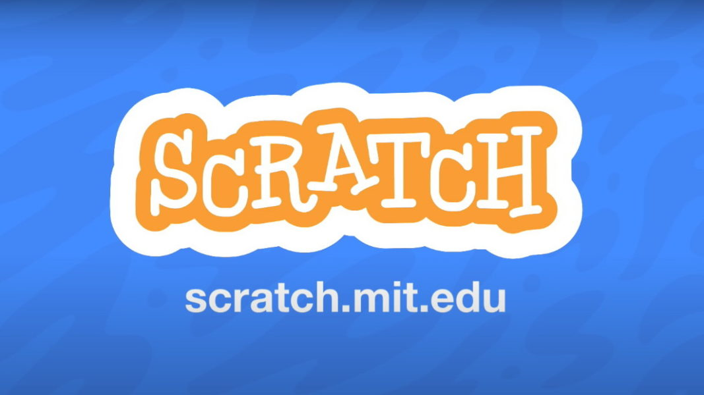
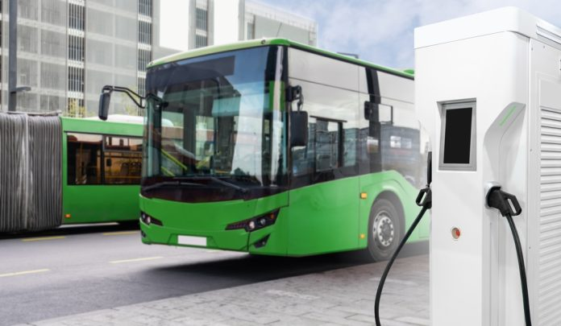

Projects

Design Thinking Project
A simple dice game designed to teach the concepts of Design Thinking to children. The game emphasizes creativity, empathy, and iterative problem solving.

AI for All Project - Smart Waste Segregation App
A smart waste segregation system developed using Google Teachable Machine, MIT App Inventor, Arduino UNO, and HC-05 Bluetooth Module. The camera classifies waste as either Dry Waste or Wet Waste using a machine learning model trained in Google Teachable Machine. Based on the prediction, the mobile application communicates with the Arduino through Bluetooth. If dry waste is detected, the Dry Waste LED lights up; if wet waste is detected, the Wet Waste LED lights up, demonstrating automated waste classification using AI and IoT technologies.

Chemistry Project
An eco-friendly transport initiative using electric buses. Focused on sustainable solutions and promoting green technology in public transportation.